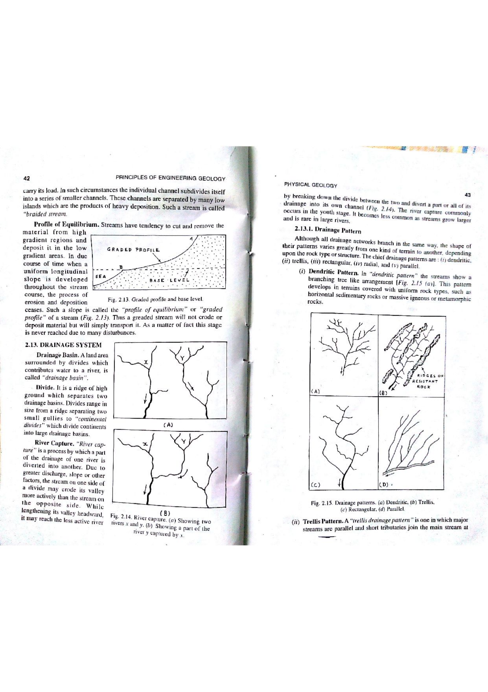

In quantitative fluvial morphometry and hydrology, drainage density ($D_d$) is a fundamental linear-areal dimensionless-scale parameter introduced by the distinguished American hydrologist and engineer Robert E. Horton in his seminal 1945 paper (Erosional development of streams and their drainage basins; hydrophysical approach to quantitative morphology, GSA Bulletin). Horton mathematically defined drainage density as the total length of streams of all orders within a drainage basin divided by the total area of the basin.
Drainage density possesses dimensions of $[L]/[L^2] = [L^{-1}]$, typically expressed in units of $\text{km}/\text{km}^2 = \text{km}^{-1}$ (or $\text{mi}/\text{mi}^2$). It serves as the primary quantitative bridge connecting watershed geology, climate, vegetative cover, and surface runoff dynamics.

Drainage density varies across three orders of magnitude (from $<1.0\text{ km}^{-1}$ in dense forests on sandstone/limestone to $>500\text{ km}^{-1}$ in arid badlands on impermeable shales). Its magnitude is dictated by the fundamental balance between erosive driving forces (surface runoff) and surface resistance forces (infiltration capacity and vegetation):
| Drainage Density Category | Value Range ($D_d$) | Dominant Bedrock Lithology & Soil | Infiltration & Runoff Dynamics | Hydrograph Flashiness |
|---|---|---|---|---|
| Extremely Low ($D_d < 2\text{ km}^{-1}$) | $< 2\text{ km/km}^2$ | Highly permeable sands, gravels, karstic limestone, thick gravelly regolith | Very high infiltration; minimal overland flow; sustained groundwater baseflow | Subdued, broad hydrographs; minimal flood risk |
| Moderate ($D_d = 5 - 15\text{ km}^{-1}$) | $5 - 15\text{ km/km}^2$ | Jointed granite, sandstones with moderate soil cover, humid temperate forests | Moderate infiltration capacity; balanced surface runoff and throughflow | Standard hydrograph response |
| High ($D_d = 15 - 50\text{ km}^{-1}$) | $15 - 50\text{ km/km}^2$ | Impermeable crystalline schist, weathered basalt, sparse vegetation | Low infiltration; rapid overland flow concentration | Sharp, rapid flood peaks |
| Extremely High / Badlands ($D_d > 100 - 500\text{ km}^{-1}$) | $> 100\text{ km/km}^2$ | Unconsolidated, impermeable montmorillonite clays, mudstones, devoid of vegetation | Near-zero infiltration; massive sheetwash and rapid rill incision | Extreme flash-flood catastrophe risk |
| Morphometric Parameter | Mathematical Formula | Physical Dimension / Units | Geomorphological & Hydrological Meaning |
|---|---|---|---|
| Drainage Density ($D_d$) | $$D_d = \frac{\sum L}{A}$$ | $[L^{-1}] \quad (\text{km}^{-1})$ | Closeness of channel spacing; landscape dissection intensity; runoff speed |
| Constant of Channel Maintenance ($C$) | $$C = \frac{1}{D_d} = \frac{A}{\sum L}$$ | $[L] \quad (\text{km}^2/\text{km})$ | Minimum surface drainage area required to sustain 1 kilometer of channel |
| Length of Overland Flow ($L_g$) | $$L_g = \frac{1}{2 D_d}$$ | $[L] \quad (\text{km} \text{ or } \text{m})$ | Average distance rainwater travels overland before entering a stream channel |
| Stream Frequency ($F_s$) | $$F_s = \frac{\sum N}{A}$$ | $[L^{-2}] \quad (\text{km}^{-2})$ | Total number of discrete channel segments per unit basin area |
| Bifurcation Ratio ($R_b$) | $$R_b = \frac{N_u}{N_{u+1}}$$ | Dimensionless | Index of tributary branching; controls synchronization of flood peaks |
| Ruggedness Number ($R_n$) | $$R_n = D_d \cdot H$$ | Dimensionless | Combines relief ($H$) and drainage density; indicates flash flood hazard |